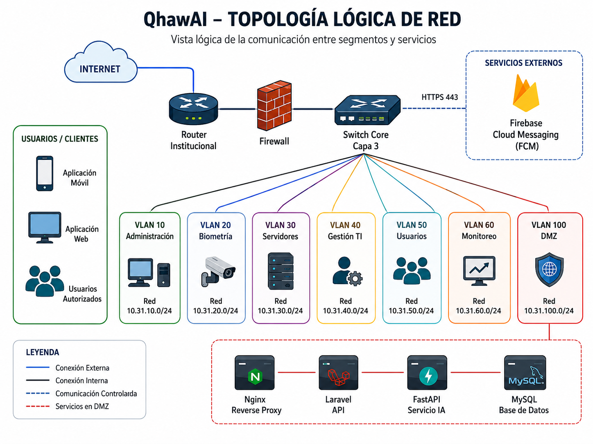
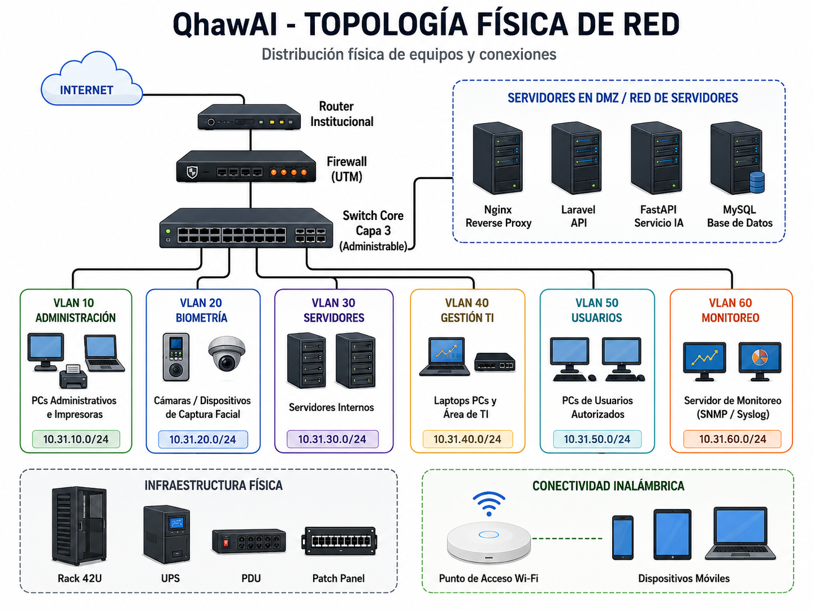
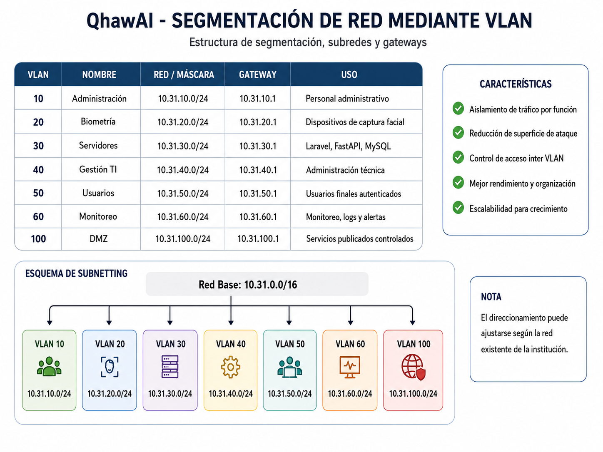
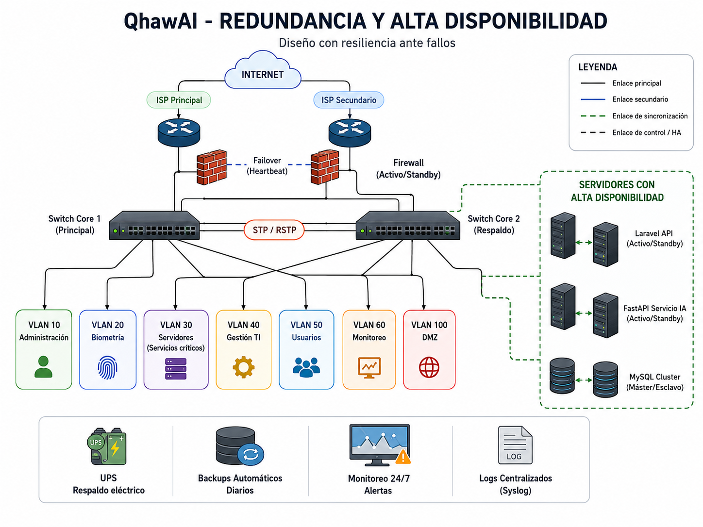

Entregable 1 — Diseño de Red
Diseño de una infraestructura de red segura, segmentada, escalable y disponible para el sistema inteligente de control de asistencia mediante reconocimiento facial QhawAI, orientado a una institución educativa.
Resumen Ejecutivo
El presente entregable desarrolla el diseño de red para QhawAI, una propuesta tecnológica orientada a automatizar el control de asistencia en una institución educativa mediante reconocimiento facial.
La solución requiere una infraestructura capaz de comunicar de manera segura a los usuarios, dispositivos de captura, servidores, servicios de inteligencia artificial, base de datos y plataformas externas de notificación.
Firebase se utiliza únicamente mediante Firebase Cloud Messaging para el envío de notificaciones push. El procesamiento principal del sistema se realiza mediante Laravel, FastAPI, MySQL y los componentes de reconocimiento facial.
El diseño propuesto incluye levantamiento de requerimientos, topología lógica, topología física, segmentación mediante VLAN, direccionamiento IP, subnetting, zona DMZ, matriz de comunicaciones, redundancia, alta disponibilidad y aplicación de estándares internacionales.
1. Introducción
El control de asistencia representa un proceso importante dentro de las instituciones educativas. Los métodos manuales pueden ocasionar demoras, errores, duplicidad de información y dificultades para verificar la identidad de los usuarios.
QhawAI propone automatizar este proceso mediante reconocimiento facial. Para garantizar su funcionamiento, se requiere una infraestructura de red que proporcione conectividad, seguridad, rendimiento, disponibilidad y capacidad de crecimiento.
Este documento presenta una propuesta de diseño de red alineada con la competencia CE0311, considerando aspectos técnicos, organizacionales y éticos.
2. Descripción del Proyecto
QhawAI es un sistema inteligente de control de asistencia mediante reconocimiento facial. Su finalidad es identificar a los usuarios, registrar la asistencia y generar información útil para el personal autorizado de una institución educativa.
El sistema integra un cliente móvil o web, una API desarrollada con Laravel, un servicio de inteligencia artificial implementado con FastAPI, una base de datos MySQL y Firebase Cloud Messaging para el envío de notificaciones push.
3. Objetivos del Diseño de Red
3.1 Objetivo general
Diseñar una infraestructura de red segura, escalable y disponible para soportar la operación del sistema inteligente de control de asistencia QhawAI en una institución educativa.
3.2 Objetivos específicos
4. Levantamiento de Requerimientos
4.1 Requerimientos de negocio
| ID | Requerimiento | Prioridad | Justificación |
|---|---|---|---|
| RN-01 | Reducir el tiempo utilizado en el registro de asistencia. | Alta | Evita interrupciones prolongadas durante las actividades académicas. |
| RN-02 | Registrar asistencias mediante verificación de identidad. | Alta | Reduce errores y posibles registros realizados por terceros. |
| RN-03 | Proteger los datos personales y biométricos. | Crítica | El sistema procesa información sensible de los usuarios. |
| RN-04 | Permitir el crecimiento progresivo del sistema. | Media | La infraestructura debe poder ampliarse hacia más usuarios y ambientes. |
| RN-05 | Enviar notificaciones push sobre eventos autorizados. | Media | Firebase Cloud Messaging permitirá distribuir avisos relacionados con el sistema. |
4.2 Requerimientos técnicos
4.3 Inventario preliminar
| Componente | Tipo | Función | Estado |
|---|---|---|---|
| Router institucional | Red | Acceso y encaminamiento principal | Por validar |
| Firewall | Seguridad | Filtrado y protección perimetral | Propuesto |
| Switch administrable | Red | Segmentación mediante VLAN | Propuesto |
| Dispositivo de captura | Biométrico | Captura de imagen facial | Por validar |
| Servidor Laravel | Aplicación | API y lógica principal | Componente del proyecto |
| Servicio FastAPI | Inteligencia artificial | Procesamiento facial | Componente del proyecto |
| MySQL 8.0 | Base de datos | Persistencia de información | Componente del proyecto |
| Firebase Cloud Messaging | Servicio cloud | Notificaciones push | Componente del proyecto |
5. Estimación de Ancho de Banda
El dimensionamiento del ancho de banda debe considerar el tráfico generado por las imágenes, las solicitudes a la API, las respuestas del servidor, el monitoreo, los registros y las comunicaciones con servicios externos.
Ancho de banda total = Cantidad de dispositivos × tráfico promedio por dispositivo × factor de crecimiento
| Servicio | Cantidad estimada | Consumo unitario | Total |
|---|---|---|---|
| Captura biométrica | 1 dispositivo inicial | 2 Mbps estimados | 2 Mbps |
| Aplicaciones administrativas | 5 usuarios | 0.5 Mbps | 2.5 Mbps |
| Solicitudes hacia la API | 10 sesiones | 0.2 Mbps | 2 Mbps |
| Monitoreo y logs | Servicios internos | 1 Mbps | 1 Mbps |
| Consumo base estimado | Operación inicial | 7.5 Mbps | |
| Margen de crecimiento | 30 % | 2.25 Mbps | |
| Total proyectado | Escenario inicial | 9.75 Mbps | |
6. Diseño de Topología
6.1 Topología lógica
La topología lógica representa la comunicación entre la red institucional, los segmentos internos, los servicios de QhawAI y Firebase Cloud Messaging.

Internet
│
Router institucional
│
Firewall
│
Switch administrable
├── VLAN 10 · Administración
├── VLAN 20 · Dispositivos biométricos
├── VLAN 30 · Servidores
├── VLAN 40 · Gestión TI
├── VLAN 50 · Usuarios
├── VLAN 60 · Monitoreo
└── VLAN 100 · DMZ
│
├── Laravel API
├── FastAPI
├── MySQL
└── Firebase Cloud Messaging por HTTPS
6.2 Topología física
La topología física muestra la ubicación y conexión de los equipos de red, servidores, estaciones autorizadas y dispositivos de captura.

7. Segmentación de Red, VLAN y Subnetting
La segmentación permite separar los diferentes tipos de tráfico, reducir la superficie de exposición y aplicar controles específicos según la función de cada red.

| VLAN | Nombre | Red | Gateway | Uso |
|---|---|---|---|---|
| 10 | Administración | 10.31.10.0/24 | 10.31.10.1 | Personal administrativo autorizado |
| 20 | Biometría | 10.31.20.0/24 | 10.31.20.1 | Dispositivos de captura facial |
| 30 | Servidores | 10.31.30.0/24 | 10.31.30.1 | Laravel, FastAPI y MySQL |
| 40 | Gestión TI | 10.31.40.0/24 | 10.31.40.1 | Administración técnica |
| 50 | Usuarios | 10.31.50.0/24 | 10.31.50.1 | Usuarios finales autorizados |
| 60 | Monitoreo | 10.31.60.0/24 | 10.31.60.1 | Métricas, registros y alertas |
| 100 | DMZ | 10.31.100.0/24 | 10.31.100.1 | Servicios publicados de forma controlada |
8. Diseño de la Zona DMZ
La DMZ se utilizará para ubicar los servicios que deban ser accesibles desde redes externas, evitando la exposición directa de los servidores internos y de la base de datos.
| Servicio | Ubicación | Acceso permitido | Restricción |
|---|---|---|---|
| Proxy reverso Nginx | DMZ | HTTPS desde Internet | Solo puertos necesarios |
| Laravel API | Red de servidores | Desde el proxy reverso | No expuesto directamente |
| FastAPI | Red de servidores | Solo desde Laravel | Sin acceso público |
| MySQL | Red de servidores | Solo desde servicios autorizados | Puerto 3306 bloqueado desde Internet |
9. Matriz de Comunicaciones
| Origen | Destino | Puerto / Protocolo | Acción | Justificación |
|---|---|---|---|---|
| Aplicación cliente | Laravel API | 443 / HTTPS | Permitir | Consumo seguro de servicios |
| Laravel | FastAPI | 8000 interno | Permitir | Procesamiento biométrico |
| Laravel | MySQL | 3306 / TCP | Permitir | Persistencia de información |
| Internet | MySQL | 3306 / TCP | Denegar | Evitar exposición directa |
| Laravel | Firebase FCM | 443 / HTTPS | Permitir | Envío de notificaciones push |
| Usuarios | Red de gestión TI | Cualquiera | Denegar | Proteger la administración técnica |
| Gestión TI | Equipos de red | 22 / SSH y 443 / HTTPS | Permitir | Administración autorizada |
| Monitoreo | Activos críticos | SNMPv3 / Syslog | Permitir | Recopilación de métricas y registros |
10. Redundancia y Alta Disponibilidad
El diseño considera mecanismos de recuperación y continuidad para disminuir el impacto de fallos en los componentes críticos.

| Componente | Fallo posible | Impacto | Medida propuesta |
|---|---|---|---|
| Internet | Caída del proveedor | Interrupción de servicios externos | Enlace secundario o funcionamiento local temporal |
| Switch principal | Falla física | Pérdida de conectividad interna | Equipo de respaldo y configuración exportada |
| Servidor | Falla de hardware o servicio | Indisponibilidad del sistema | Virtualización, backup y recuperación |
| Energía | Corte o variación eléctrica | Apagado inesperado | UPS y apagado controlado |
| Almacenamiento | Falla de disco | Pérdida de datos | RAID o copias externas cifradas |
| Configuración de red | Error o corrupción | Falla de comunicación | Versionado y respaldo de configuraciones |
10.1 Análisis de puntos únicos de fallo
El servidor principal, el firewall, el switch central y la conexión a Internet representan posibles puntos únicos de fallo. Durante la fase inicial podrán existir como componentes individuales, pero deberán contar con respaldos, procedimientos de recuperación y opciones de sustitución.
11. Cumplimiento de Estándares
| Estándar | Aplicación en el proyecto | Evidencia prevista |
|---|---|---|
| TIA/EIA-568 | Cableado estructurado, conectores y terminaciones. | Plano físico y especificación del cableado. |
| TIA-569 | Canalizaciones y espacios de telecomunicaciones. | Distribución física de la red. |
| TIA-606 | Etiquetado de cables, puertos y equipos. | Inventario y codificación. |
| IEEE 802.1Q | VLAN y enlaces troncales. | Configuración de segmentación. |
| IEEE 802.1w | Prevención de bucles y convergencia rápida. | Diseño de redundancia. |
| IEEE 802.3 | Conectividad Ethernet. | Selección de interfaces y velocidades. |
| ISO/IEC 11801 | Cableado genérico de telecomunicaciones. | Diseño integral de cableado. |
12. Calidad Documental y Ética ACM
El diseño de la infraestructura considera la protección de la privacidad, la confidencialidad, la integridad y el uso responsable de la información biométrica.
La red y los servicios no deberán utilizarse para vigilancia no autorizada ni para finalidades diferentes al control de asistencia informado a los usuarios.
13. Conclusiones
El diseño propuesto establece una infraestructura segmentada, escalable y protegida para soportar los servicios de QhawAI.
La separación entre usuarios, dispositivos biométricos, servidores, gestión TI, monitoreo y DMZ permite reducir la exposición de los componentes críticos.
La aplicación de VLAN, subnetting, reglas de comunicación, redundancia y estándares internacionales proporciona una base técnica para la futura implementación y validación de la red.
Los valores definitivos de capacidad, usuarios y dispositivos deberán ser actualizados cuando se realice el levantamiento técnico completo de la institución educativa.
14. Anexos
| Anexo | Descripción | Archivo relacionado | Estado |
|---|---|---|---|
| Anexo A | Topología lógica | e1-topologia-logica-qhawai.png | Pendiente de generar |
| Anexo B | Topología física | e1-topologia-fisica-qhawai.png | Pendiente de generar |
| Anexo C | Segmentación mediante VLAN | e1-segmentacion-vlan-qhawai.png | Pendiente de generar |
| Anexo D | Diseño de redundancia | e1-redundancia-qhawai.png | Pendiente de generar |
| Anexo E | Lista de requerimientos | Incluida en el entregable | Avance inicial |
| Anexo F | Plan de direccionamiento IP | Incluido en el entregable | Propuesto |
Verificación de la Rúbrica CE0311
| Criterio | Evidencia en el entregable | Estado |
|---|---|---|
| Levantamiento de requerimientos | Requerimientos técnicos y de negocio con justificación. | Desarrollado |
| Topología lógica y física | Secciones 6.1 y 6.2 con espacios para diagramas. | Pendiente de imágenes |
| VLAN, DMZ y subnetting | Tabla de VLAN, direccionamiento y matriz de comunicaciones. | Desarrollado |
| Redundancia y disponibilidad | Análisis de fallos y medidas de recuperación. | Desarrollado |
| Estándares internacionales | TIA/EIA, IEEE e ISO/IEC. | Desarrollado |
| Calidad documental y ética | Estructura profesional y sección ética ACM. | Desarrollado |